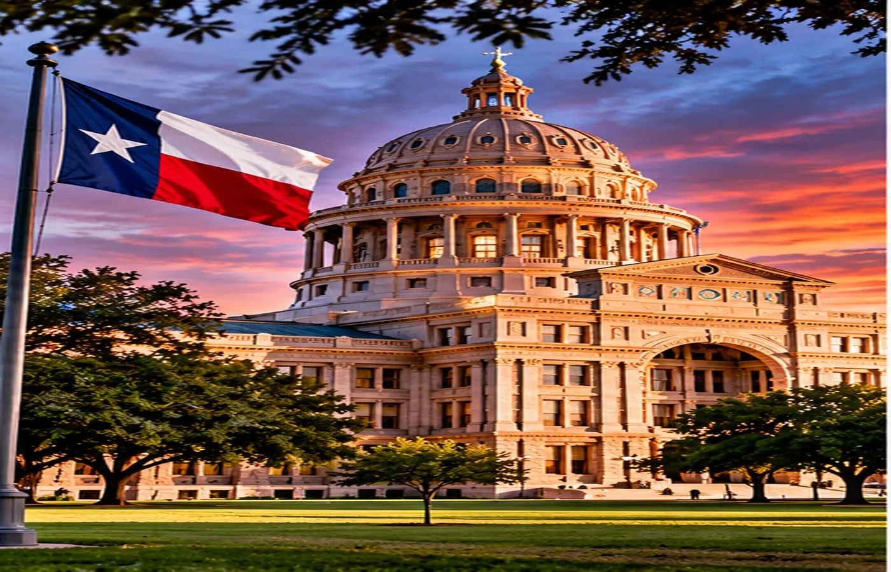

TRUMP: DEPORTATION CRACKDOWN WAS “TOO TOUGH”
After Republican midterm losses, the president says immigration enforcement may have hurt his party at the polls.

President Donald Trump is reassessing one of the most prominent policies of his second term. In a CBS 60 Minutes interview broadcast November 8, he acknowledged that his administration’s deportation approach may have gone too far, particularly when it affected people who had worked in the United States for years.
Trump said he still regarded border enforcement and removing dangerous offenders as successes. But he distinguished those cases from immigrants who have jobs, pay taxes and have not committed serious crimes beyond entering the country unlawfully.
The comments followed Republican losses in the 2026 midterm elections. Trump suggested immigration enforcement was one factor in the political backlash and expressed interest in discussing a possible agreement with congressional Democrats.
For now, the remarks do not amount to an announced change in immigration law or enforcement policy. What happens next will depend on White House decisions and negotiations with Congress.
Source: CBS News. Original reporting and synthesis by Texas News Studio.